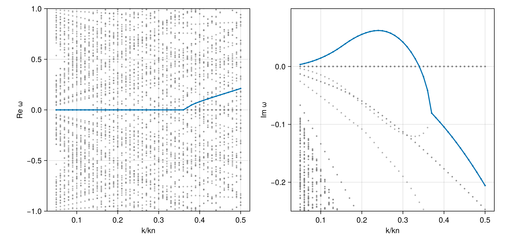

Case: Firehose instability (kappa distribution)
This page demonstrates test firehose instability using Hermite-Hermite (HH) expansion for bi-kappa distribution. BOHH expands every non-Maxwellian model into a HermiteVDF about its thermal speeds and drift. Use HermiteVDF(model; w_perp, w_para, N_para, N_perp) to control the expansion, and HermiteVDF(GridVDF(v_perp, v_para, f)) for tabulated distributions. The series is truncated, so low κ needs care: see BO-PBK for integer κ∥.
Simulation Parameters
- Background Magnetic Field: $B_0 = 0.1$ T
- Species:
- Electrons (Maxwellian)
- Density: $n_e = 5 \times 10^{19}$ m$^{-3}$
- Temperature: $T_e = 496.683$ eV
- Protons (Bi-Kappa)
- Density: $n_p = 5 \times 10^{19}$ m$^{-3}$
- Parallel Temperature: $T_{\parallel p} = 1986.734$ eV
- Perpendicular Temperature: $T_{\perp p} = 993.367$ eV
- Kappa Indices: $\kappa_{\parallel} = \kappa_{\perp} = 5.5$
- Electrons (Maxwellian)
using PlasmaBO
using PlasmaPopulations: gyrofrequency
B0 = 0.1 # [Tesla]
θ = deg2rad(45)
n = 5.0e19
p, e = Proton(), Electron()
electron = BiMaxwellian(e; T = 496.683)
proton = ProductBiKappa(p; T_perp = 993.367, T_para = 1986.734, kappa_perp = 5.5, kappa_para = 5.5)ProductBiKappa{Float64, Float64}(436240.6848431325, 616937.4929640851, 5.5, 5.5, 0.0, 0.0)plasma = Plasma(Population(p, proton; n), Population(e, electron; n); B0)
kn = 31.0613
k = kn / 4
wci = gyrofrequency(p, B0)
alg = BOHH(; N = 2, J = 24)
at = Wavevector(; k, theta = θ)
ωs = solve(DispersionProblem(plasma, at), alg).omega
ω0 = argmax(imag, ωs) # the most unstable root
ω0 / wci-2.0211369165981476e-5 + 0.06175301805900877imThe firehose mode is purely growing: Re ω is zero up to round-off, of either sign.
Dispersion Curve Scan
Every eigenvalue over the scan, and the firehose branch tracked through them from ω0:
sweep = AngleSweep(; k = collect(0.05:0.01:0.5) .* kn, theta = θ)
survey = solve(DispersionProblem(plasma, sweep), alg)
firehose = track(survey, ω0, at)
maximum(imag, firehose.omega) / wci0.06225035896366145using CairoMakie
fig, (axr, axi) = dispersion_diagram(survey; k_unit = kn, omega_unit = wci, xlabel = "k/kn")
dispersion_diagram!((axr, axi), firehose; k_unit = kn, omega_unit = wci)
ylims!(axr, -1, 1)
ylims!(axi, -0.25, 0.1)
fig